Voyago
Planning a vacation should be a pleasure. Too often it's a mental load. Voyago is an iOS travel app that brings inspiration, booking (flights and hotels) and an AI-assisted itinerary planner into one simple app, so the preparation feels as enjoyable as the trip itself.
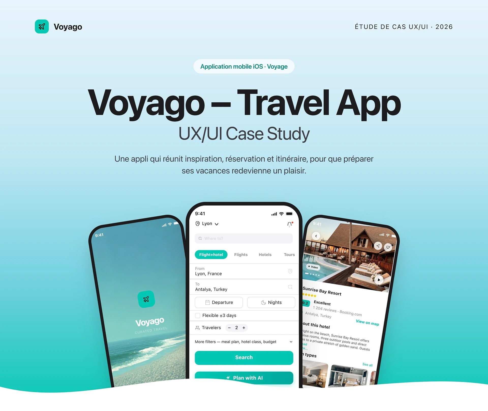
Project overview
Voyago is an iOS app that reunites inspiration, flight and hotel booking, and an itinerary planner in a single simple app, designed by one person end-to-end: research, UX design and UX writing, built as a high-fidelity prototype over two weeks using Figma, FigJam and AI tools.
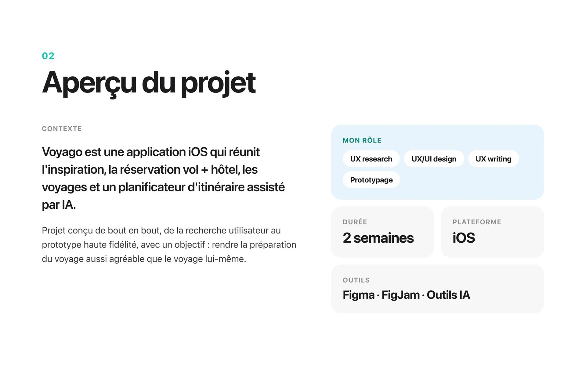
Problem & objectives
The core insight: preparing a vacation should be a pleasure, but reuniting inspiration, booking and itinerary in a single confident app is often a mental burden instead. Voyago's objectives were split evenly between user needs (find inspiration, book with confidence, plan a trip without the back-and-forth) and business needs (increase conversion, build loyalty, differentiate from existing travel apps).
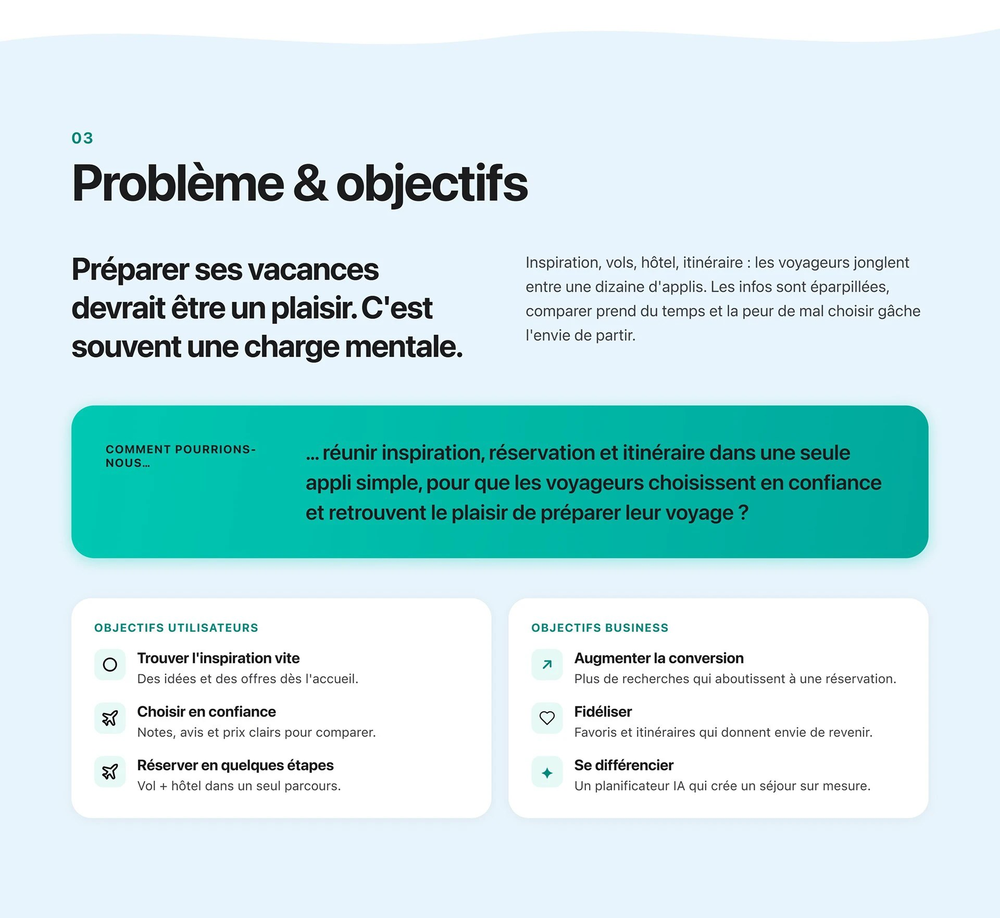
Research & competitive benchmark
Research combined quantitative insight (78% report mental load preparing a trip, users spend 6+ hours comparing offers, 64% find the final price unclear) with a direct competitive benchmark against Booking.com, Airbnb, Expedia and TripAdvisor across the features that actually matter: an all-in-one flight-and-hotel search, day-by-day itinerary planning, and an AI trip planner, where Voyago was the only one to check every box.
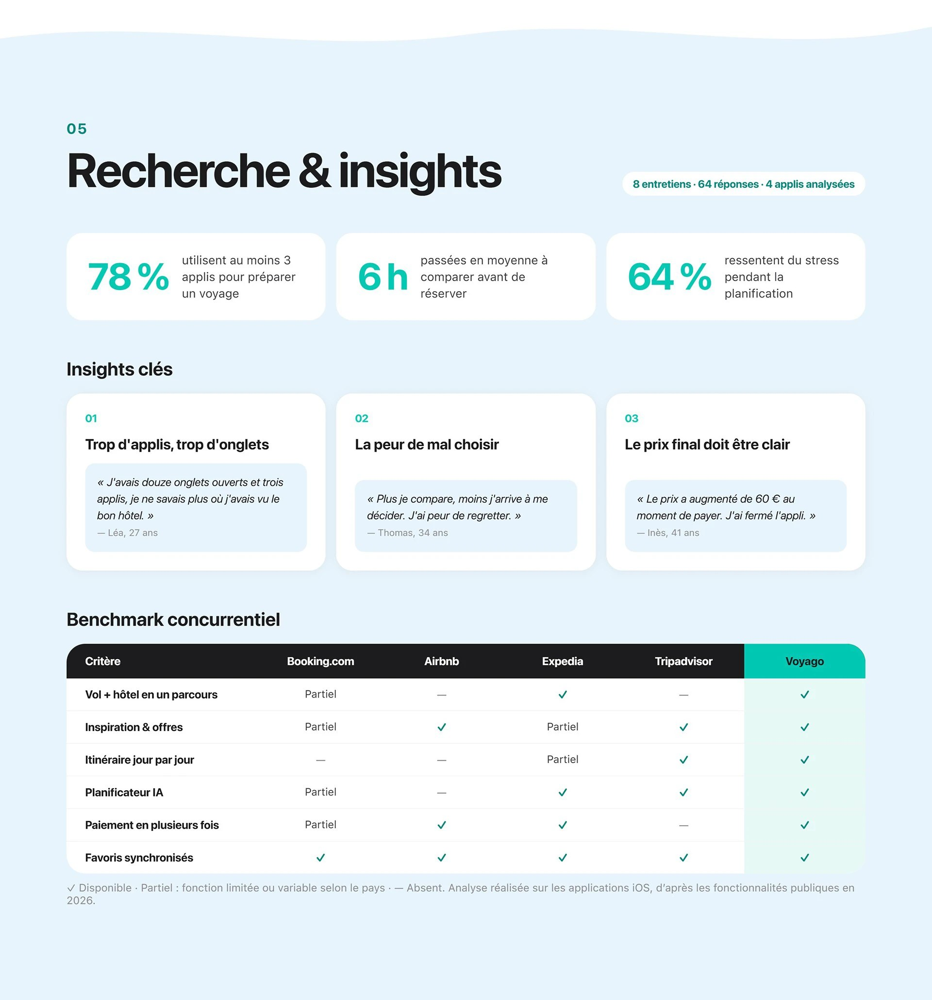
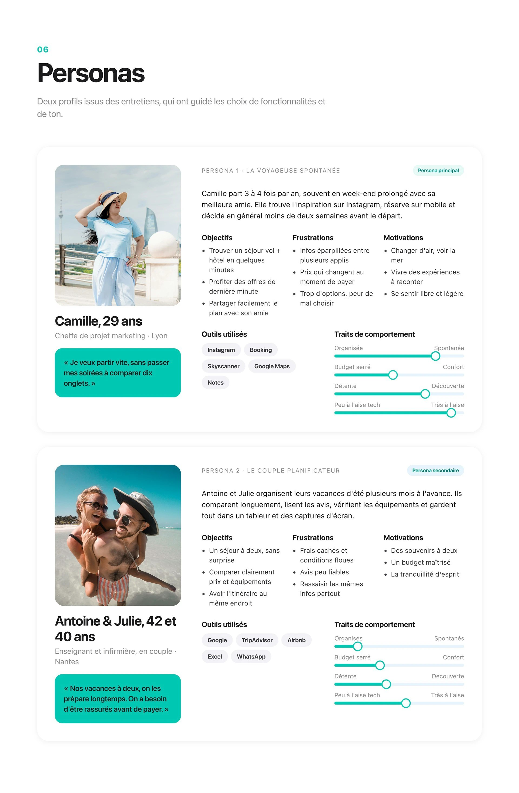
Journey, flows & wireframes
Camille's customer journey mapped the specific moments of friction across inspiration, planning, booking, travel and return, which fed directly into three concrete user flows: booking a stay, creating an AI-assisted itinerary, and saving a favorite. Low-fidelity wireframes validated structure and hierarchy before any color was introduced.
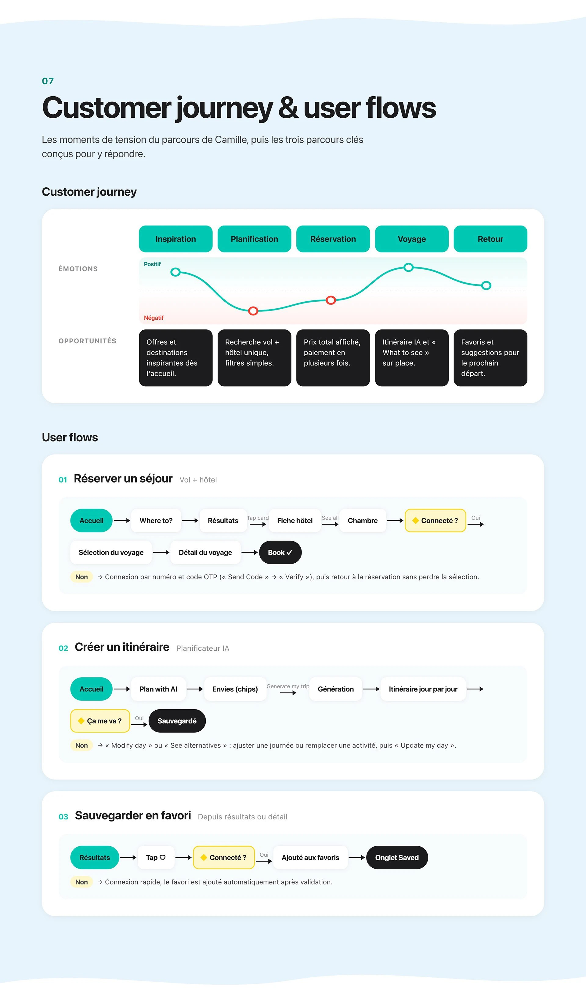
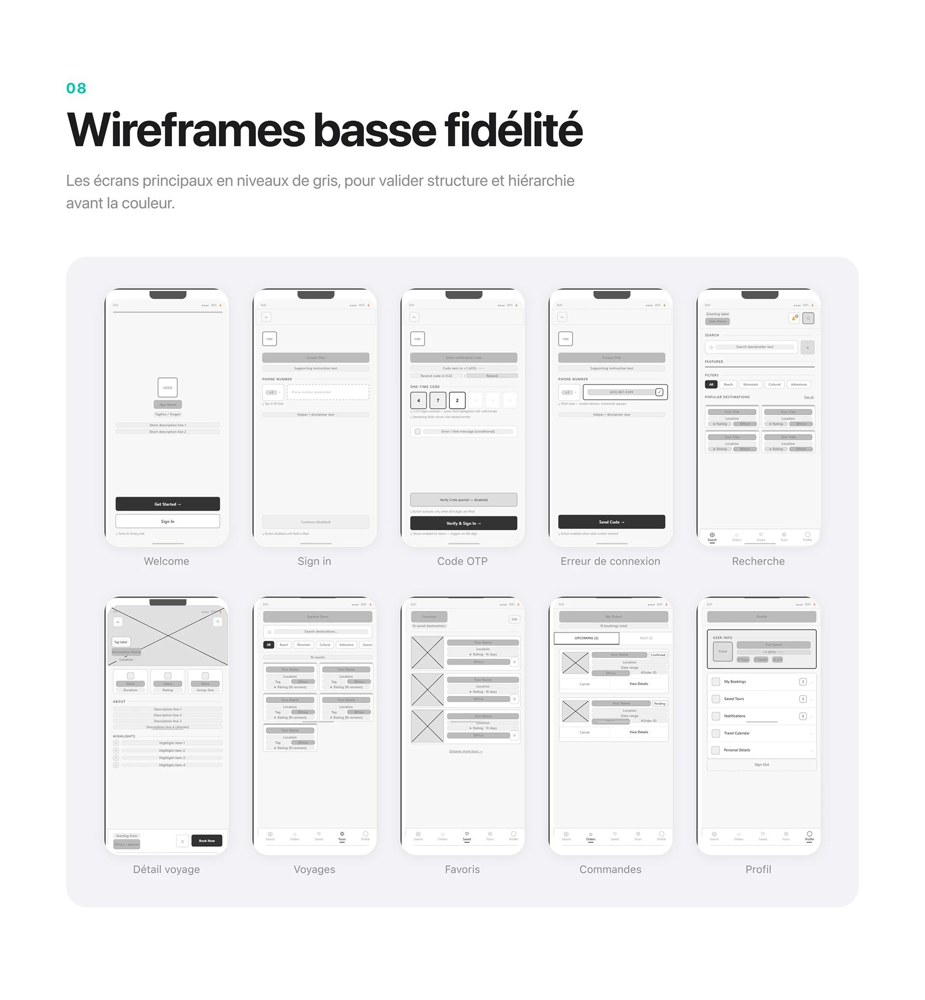
Design system & high-fidelity screens
The design system is built on SF Pro, a 4-column grid, and a WCAG-contrast-checked palette anchored by a single brand teal (deliberately kept to one accent color rather than competing hues), carried through 17 high-fidelity iOS screens covering onboarding, search and booking, trip and profile management, and the AI itinerary planner.
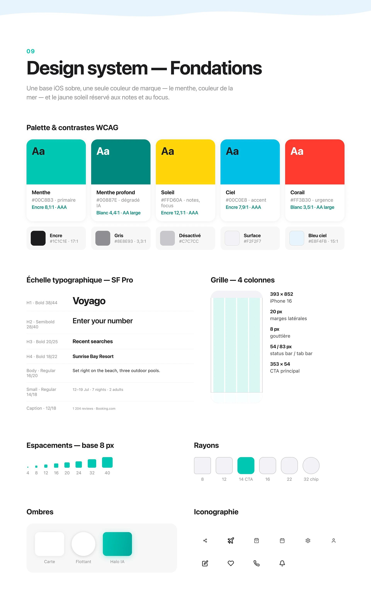
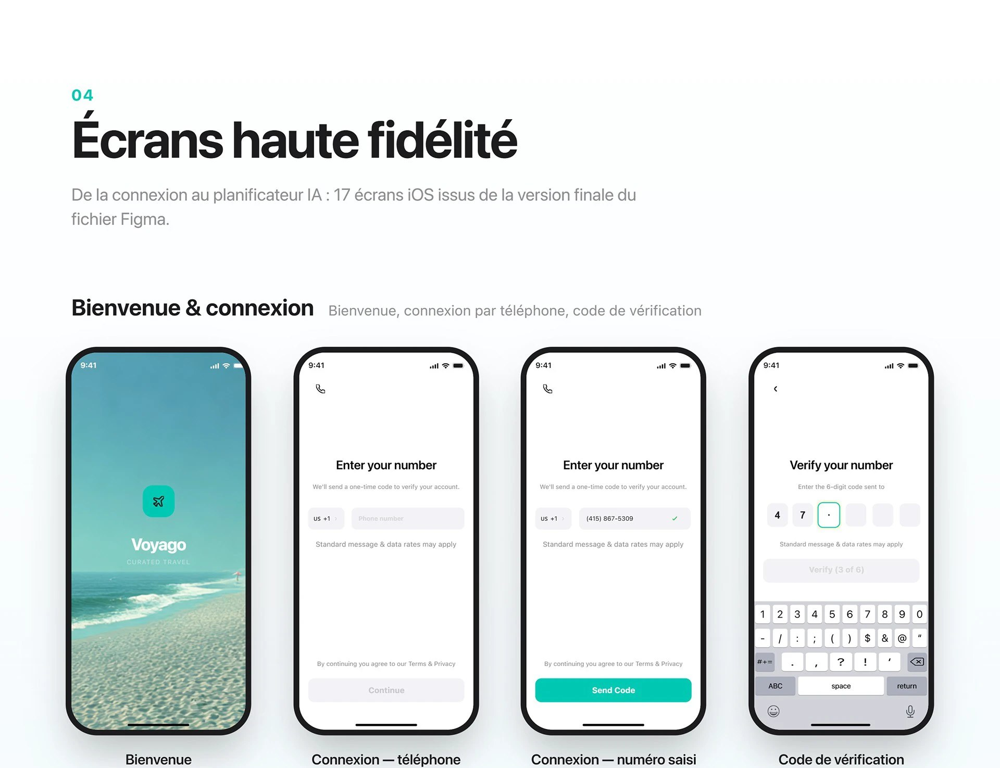
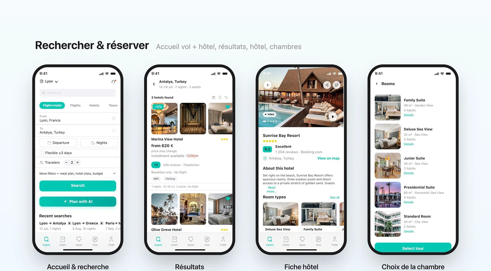
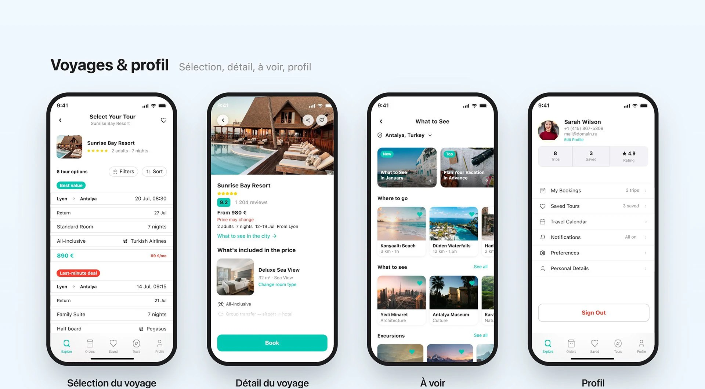
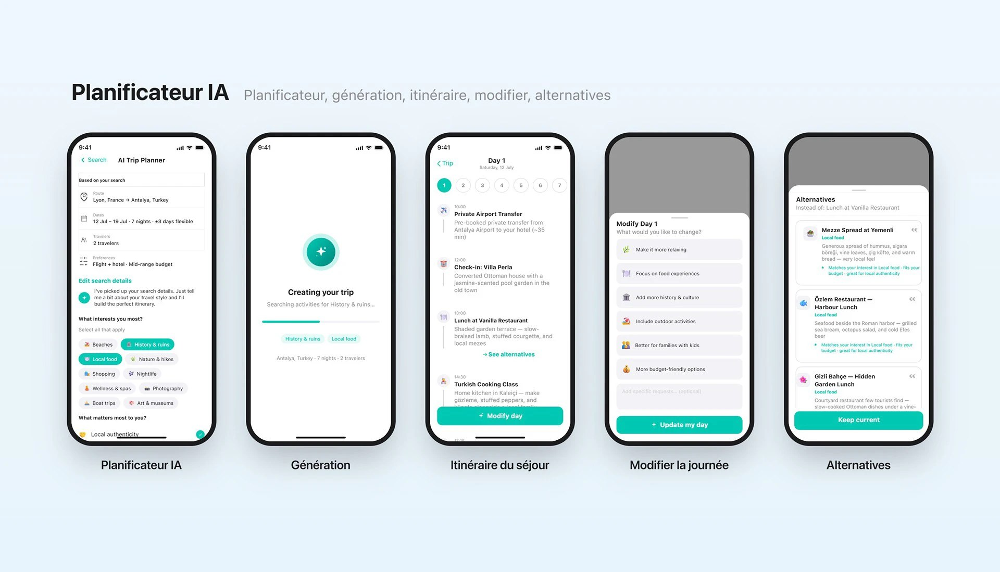
Testing & results
Usability testing with 5 participants across 3 sessions found 92% could complete the core booking task, cut the time to find a stay by 40%, and scored 84 on the System Usability Scale, alongside concrete learnings for next steps: converging on a single primary action per screen, simplifying date-and-currency confirmation, and finishing a dark-mode audit.
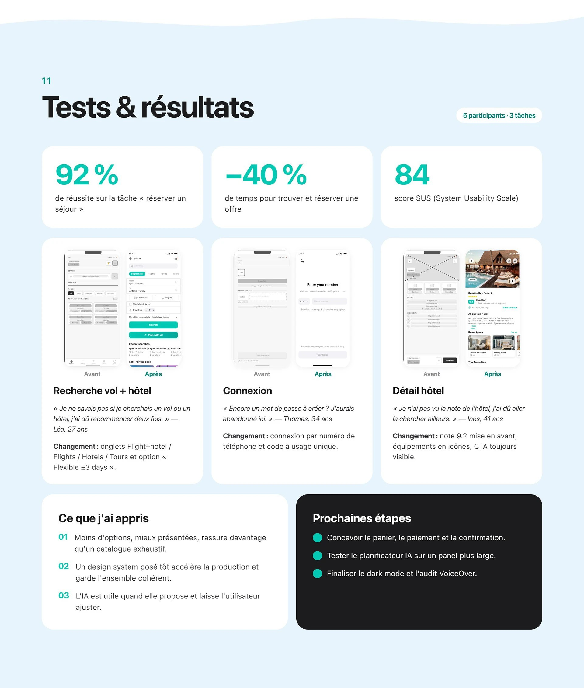
Outcome
A complete, research-backed iOS travel app concept, from a quantified mental-load problem through personas, flows, a 17-screen high-fidelity prototype and real usability-test numbers, built solo end-to-end in two weeks.
The real design decision was consolidation: resisting the urge to add more features, and instead proving that inspiration, booking and itinerary planning genuinely belong in one app rather than three.